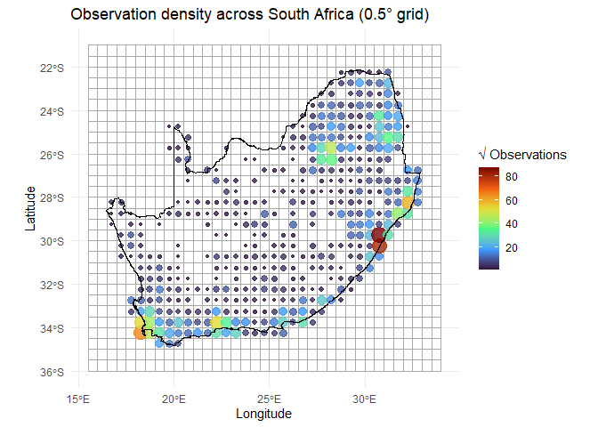
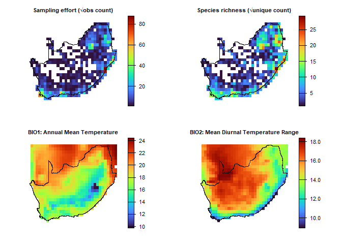
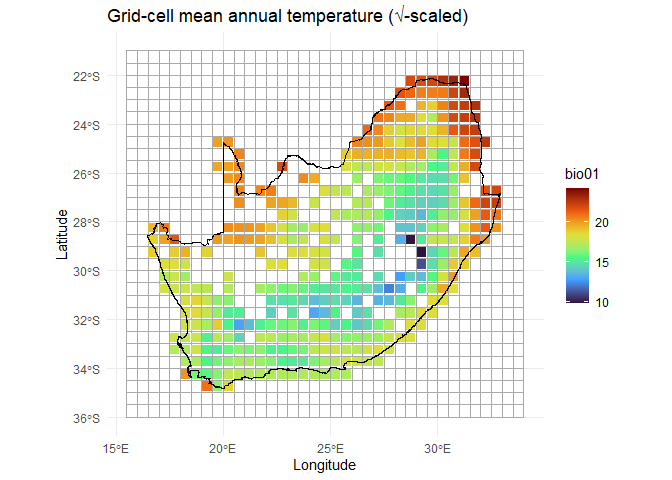
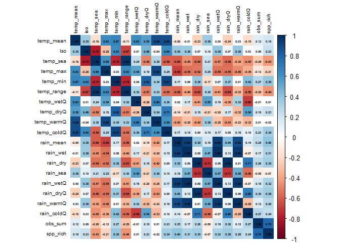
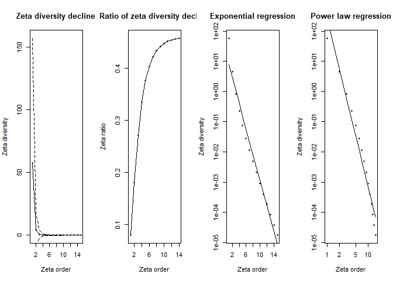
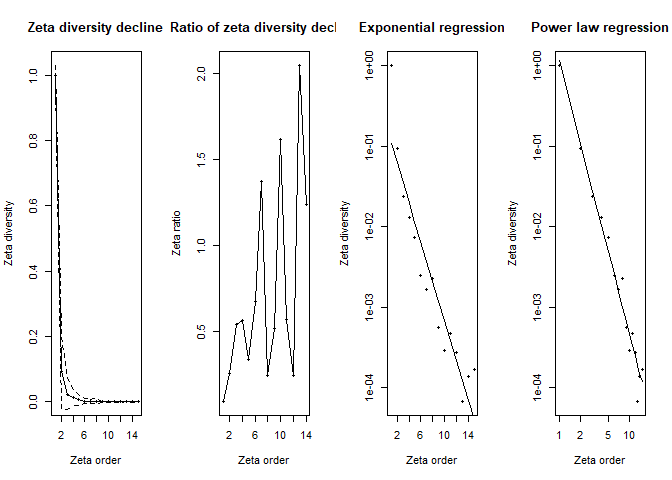
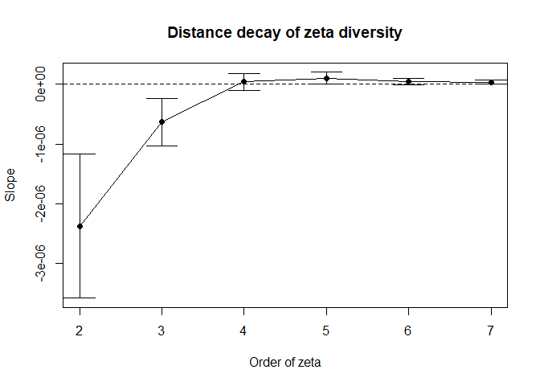
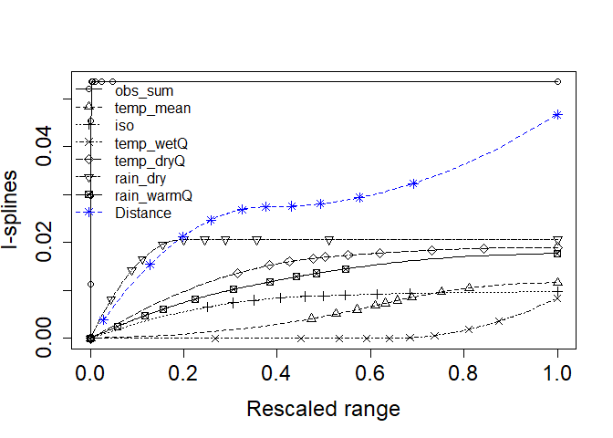

Introduction
dissmapr is an R package for analysing compositional dissimilarity and biodiversity turnover across spatial gradients. It provides scalable, modular workflows that integrate species occurrence, environmental data, and multi-site metrics to quantify and predict biodiversity patterns. A core feature is the use of zeta diversity, which extends beyond pairwise comparisons to capture shared species across multiple sites—offering deeper insight into community assembly, turnover, and connectivity. By incorporating modern approaches such as multi-site Generalised Dissimilarity Modelling (MS-GDM), dissmapr enables robust mapping, bioregional classification, and scenario-based forecasting. Designed for flexibility and reproducibility, it supports biodiversity monitoring and conservation planning at landscape to regional scales.
Workflow Overview
dissmapr implements a structured, reproducible workflow for analysing biodiversity patterns and delineating bioregions. Each function aligns with a specific step, guiding users from data acquisition to predictive mapping. The workflow begins with sourcing species occurrence and georeferenced environmental data, followed by data formatting and calculation of compositional turnover using zeta diversity metrics (via the zetadiv package). Multi-Site Generalized Dissimilarity Modelling (MS-GDM) is then applied to model and predict dissimilarity across landscapes. These predictions feed into the Dissimilarity Cube, which classifies spatial clusters of species composition into distinct bioregions. The framework supports the integration of historical and future climate data to assess shifts in biodiversity and detect emerging, shifting, or dissolving bioregions under global change. This step-by-step structure, mirrored in the accompanying tutorial sections, promotes accessibility, transparency, and ecological insight at multiple spatial and temporal scales.
1. Install and load dissmapr
Install and load the dissmapr package from GitHub, ensuring all functions are available for use in the analysis workflow.
2. Load other R libraries
Load core libraries for spatial processing, biodiversity modelling, and visualization required across the dissmapr analysis pipeline.
# Load necessary libraries
library(httr) # HTTP client
library(geodata) # Download geographic data
library(data.table) # Fast large-table operations
library(dplyr) # Data manipulation verbs
library(tidyr) # Tidy data reshaping
library(zoo) # Time series utilities
library(sf) # Vector spatial data
library(terra) # Raster spatial operations
library(zetadiv) # Multi-site biodiversity turnover
library(ggplot2) # Grammar of graphics
library(viridis) # Perceptual color scales 3. User-defined area of interest and grid resolution
Load the spatial boundary data for South Africa to serve as the geographic reference for all subsequent biodiversity analyses and visualizations.
# Read RSA shape file
rsa = sf::st_read('inst/extdata/rsa.shp')
#> Reading layer `rsa' from data source
#> `D:\Methods\R\myR_Packages\myCompletePks\dissmapr\inst\extdata\rsa.shp'
#> using driver `ESRI Shapefile'
#> Simple feature collection with 1 feature and 1 field
#> Geometry type: POLYGON
#> Dimension: XY
#> Bounding box: xmin: 16.45802 ymin: -34.83514 xmax: 32.89125 ymax: -22.12661
#> Geodetic CRS: WGS 844. Site by species matrix and sampling effort
This section focuses on automating the retrieval and pre-processing of core data, including species occurrence and environmental variables. These data form the basis for further ecological analysis and model building.
Access occurrences of user-specified taxon or species list using get_occurrence_data
Use get_occurrence_data to automate the retrieval and pre-processing of species occurrence data from multiple sources, including:
- local databases,
- the Global Biodiversity Information Facility (GBIF), and
- species occurrence cubes from B3 (specification) [*work in progress].
The function assembles data on species distributions across specified taxonomic groups and regions, producing presence-absence or abundance matrices that quantify species co-occurrence within locations.
bfly_data = get_occurrence_data(
data = 'inst/extdata/gbif_butterflies.csv',
source_type = 'local_csv',
sep = '\t'
)
dim(bfly_data)
#> [1] 81825 525. Format data using format_df
Use format_df to standardise and reshape biodiversity data into long or wide formats. The function automatically identifies key columns (e.g., coordinates, species, and values), assigns missing site IDs, and reformats the data for analysis. Outputs include a cleaned dataset and species-site matrices for further processing:
• site_xy: Holds spatial coordinates of sampled sites.
• site_sp: Site-by-species matrix for biodiversity assessments.
6. Summarise records by grid using generate_grid
Use generate_grid to divide the study area, derived from the geographic extent of the occurrence data above, into grids of user-defined resolution, creating a spatial grid over a specified geographic extent. It assigns unique grid IDs to points and summarizes selected data columns within each grid cell. The function outputs a raster grid, grid polygons for visualization, and a data frame summarizing the contents of each grid cell, including totals and centroids. It is particularly useful for aggregating spatial data, such as biodiversity observations, into predefined spatial units for further analysis.
Assign records to a grid at a set resolution (e.g. 0.5°)
Aggregate species records into equal-area grid cells to enable spatially standardized biodiversity analyses.
grid_list = generate_grid(
data = site_spp,
x_col = "x",
y_col = "y",
grid_size = 0.5,
sum_col_range = 4:ncol(site_spp),
crs_epsg = 4326
)
aoi_grid = grid_list$grid_sf
grid_spp = grid_list$block_sp
dim(aoi_grid)
#> [1] 1110 8
dim(grid_spp)
#> [1] 415 2874Generate a data frame ‘xy’ of site centroids
Extract longitude–latitude coordinates and summary metrics for each occupied grid cell.
Generate a map of RSA with occupied grid cells as centroid points
Visualize observation density across South Africa using centroid-based mapping of gridded biodiversity data.
ggplot() +
geom_sf(data = aoi_grid, fill = NA, color = "darkgrey", alpha = 0.5) +
geom_point(data = grid_spp,
aes(x = centroid_lon, y = centroid_lat,
size = sqrt(obs_sum),
color = sqrt(obs_sum))) +
scale_color_viridis_c(option = "turbo") +
geom_sf(data = rsa, fill = NA, color = "black") +
theme_minimal() +
labs(title = "0.5° Grid with Observation Counts",
x = "Longitude", y = "Latitude")
7. Generate site by species matrix called site_spp
Create a matrix of species counts per site for use in biodiversity and dissimilarity analyses.
xy = grid_spp[,2:3]
site_spp = grid_spp[,c(1:3,5:ncol(grid_spp))]
head(site_spp[,1:10])
#> grid_id centroid_lon centroid_lat obs_sum spp_rich
#> 1 1026 28.75 -22.25004 3 2
#> 2 1027 29.25 -22.25004 41 31
#> 3 1028 29.75 -22.25004 10 10
#> 4 1029 30.25 -22.25004 7 7
#> 5 1030 30.75 -22.25004 6 6
#> 6 1031 31.25 -22.25004 107 76
#> Mylothris agathina subsp. agathina Pieris brassicae Tarucus thespis
#> 1 0 0 0
#> 2 0 0 0
#> 3 0 0 0
#> 4 0 0 0
#> 5 0 0 0
#> 6 0 0 0
#> Acraea horta Danaus chrysippus
#> 1 0 0
#> 2 0 0
#> 3 0 0
#> 4 0 0
#> 5 0 0
#> 6 0 0
dim(site_spp)
#> [1] 415 2873Generate record of occurrence counts called sam_eff
Summarize the number of species observations per grid cell to assess sampling effort.
Generate a binary data frame ‘sbs’
Convert species abundance data to presence–absence format (site_spp_pa) for binary dissimilarity analyses.
sp_cols = names(site_spp)[-(1:5)]
sbs = site_spp %>%
mutate(across(all_of(sp_cols), ~ ifelse(. > 0, 1, 0)))
# Assuming 'sp_cols' is a vector of column names
site_spp_pa = site_spp %>%
mutate(across(all_of(sp_cols), ~ ifelse(!is.na(.) & . > 0, 1, 0)))
head(site_spp_pa[,1:10])
#> grid_id centroid_lon centroid_lat obs_sum spp_rich
#> 1 1026 28.75 -22.25004 3 2
#> 2 1027 29.25 -22.25004 41 31
#> 3 1028 29.75 -22.25004 10 10
#> 4 1029 30.25 -22.25004 7 7
#> 5 1030 30.75 -22.25004 6 6
#> 6 1031 31.25 -22.25004 107 76
#> Mylothris agathina subsp. agathina Pieris brassicae Tarucus thespis
#> 1 0 0 0
#> 2 0 0 0
#> 3 0 0 0
#> 4 0 0 0
#> 5 0 0 0
#> 6 0 0 0
#> Acraea horta Danaus chrysippus
#> 1 0 0
#> 2 0 0
#> 3 0 0
#> 4 0 0
#> 5 0 0
#> 6 0 0
dim(site_spp_pa)
#> [1] 415 2873Generate richness of sbs row sums and map
Calculate species richness per site based on binary presence–absence data.
spp_rich = grid_spp[, c("grid_id","centroid_lon","centroid_lat","spp_rich")]8. Site by environment matrix
Retrieve Environmental Data with get_enviro_data
Use get_enviro_data to extract environmental variables for spatial points from either species observations or grid centroids. Data can be sourced from online repositories (e.g. WorldClim, SoilGrids via geodata) or local rasters. The function defines an area of interest with a buffer, extracts selected variables, and interpolates missing values using nearby non-NA points. Outputs include cropped rasters, spatial points (as an sf object), and a combined site-by-environment data frame (site_env) for downstream ecological analyses. Future support will extend to CHELSA (climenv), Google Earth Engine (rgee), and mapme.biodiversity for expanded environmental and biodiversity data access.
enviro_list = get_enviro_data(
data = sbs,
buffer_km = 10,
source = 'geodata',
var = "bio",
res = 5,
path = 'download_data',
sp_cols = 6:ncol(sbs),
ext_cols = c('obs_sum','spp_rich')
)
ras_enviro = enviro_list$env_rastAdd ‘eff-rich’ raster to the enviro stack raster
Combine environmental rasters with sampling effort and species richness layers for joint spatial analysis.
ras_enviro_effRich = c(ras_effRich, resample(ras_enviro, ras_effRich))
plot(ras_enviro_effRich[[1:4]])
Extract environmental variables for site centroids ‘xy’
Link environmental data to grid centroids and visualize spatial variation in selected climate variables.
env_df = enviro_list$env_df[,c(1:5,8:26)]
head(env_df)
#> grid_id centroid_lon centroid_lat obs_sum...4 spp_rich...5 1 2
#> 1 1026 28.75 -22.25004 3 2 21.88425 14.47900
#> 2 1027 29.25 -22.25004 41 31 21.76921 14.61358
#> 3 1028 29.75 -22.25004 10 10 21.53492 14.00267
#> 4 1029 30.25 -22.25004 7 7 23.01796 13.67825
#> 5 1030 30.75 -22.25004 6 6 23.59879 13.83525
#> 6 1031 31.25 -22.25004 107 76 24.57367 14.64933
#> 3 4 5 6 7 8 9 10 11
#> 1 55.67347 427.1824 32.446 6.439 26.007 26.13383 16.05333 26.13383 16.05333
#> 2 53.90477 453.1160 32.977 5.867 27.110 26.47767 15.63300 26.47767 15.63300
#> 3 56.31250 392.8977 31.662 6.796 24.866 25.51400 16.11067 25.51400 16.11067
#> 4 57.83615 357.9102 32.791 9.141 23.650 26.64050 18.05417 26.64050 18.05417
#> 5 59.58590 334.4157 33.509 10.290 23.219 26.95950 18.99083 26.95950 18.99083
#> 6 61.67101 332.0319 34.788 11.034 23.754 27.88800 20.00150 27.88800 20.00150
#> 12 13 14 15 16 17 18 19
#> 1 334 68 1 88.32125 185 5 185 5
#> 2 354 74 1 85.64050 191 6 191 6
#> 3 429 90 2 86.95976 236 9 236 9
#> 4 425 88 1 90.60240 245 8 245 8
#> 5 456 98 2 93.44035 274 8 274 8
#> 6 463 97 2 94.23997 281 10 281 10
head(env_df[,15:24])
#> 10 11 12 13 14 15 16 17 18 19
#> 1 26.13383 16.05333 334 68 1 88.32125 185 5 185 5
#> 2 26.47767 15.63300 354 74 1 85.64050 191 6 191 6
#> 3 25.51400 16.11067 429 90 2 86.95976 236 9 236 9
#> 4 26.64050 18.05417 425 88 1 90.60240 245 8 245 8
#> 5 26.95950 18.99083 456 98 2 93.44035 274 8 274 8
#> 6 27.88800 20.00150 463 97 2 94.23997 281 10 281 10
# Rename `env_df` column names
names(env_df) = c('grid_id','x','y','obs_sum','spp_rich',"temp_mean", "mdr", "iso", "temp_sea", "temp_max",
"temp_min", "temp_rang","temp_wetQ", "temp_dryQ", "temp_warmQ",
"temp_coldQ", "rain_mean","rain_wet", "rain_dry", "rain_sea",
"rain_wetQ", "rain_dryQ","rain_warmQ", "rain_coldQ")
# Check the first few rows
head(env_df)
#> grid_id x y obs_sum spp_rich temp_mean mdr iso temp_sea
#> 1 1026 28.75 -22.25004 3 2 21.88425 14.47900 55.67347 427.1824
#> 2 1027 29.25 -22.25004 41 31 21.76921 14.61358 53.90477 453.1160
#> 3 1028 29.75 -22.25004 10 10 21.53492 14.00267 56.31250 392.8977
#> 4 1029 30.25 -22.25004 7 7 23.01796 13.67825 57.83615 357.9102
#> 5 1030 30.75 -22.25004 6 6 23.59879 13.83525 59.58590 334.4157
#> 6 1031 31.25 -22.25004 107 76 24.57367 14.64933 61.67101 332.0319
#> temp_max temp_min temp_rang temp_wetQ temp_dryQ temp_warmQ temp_coldQ
#> 1 32.446 6.439 26.007 26.13383 16.05333 26.13383 16.05333
#> 2 32.977 5.867 27.110 26.47767 15.63300 26.47767 15.63300
#> 3 31.662 6.796 24.866 25.51400 16.11067 25.51400 16.11067
#> 4 32.791 9.141 23.650 26.64050 18.05417 26.64050 18.05417
#> 5 33.509 10.290 23.219 26.95950 18.99083 26.95950 18.99083
#> 6 34.788 11.034 23.754 27.88800 20.00150 27.88800 20.00150
#> rain_mean rain_wet rain_dry rain_sea rain_wetQ rain_dryQ rain_warmQ
#> 1 334 68 1 88.32125 185 5 185
#> 2 354 74 1 85.64050 191 6 191
#> 3 429 90 2 86.95976 236 9 236
#> 4 425 88 1 90.60240 245 8 245
#> 5 456 98 2 93.44035 274 8 274
#> 6 463 97 2 94.23997 281 10 281
#> rain_coldQ
#> 1 5
#> 2 6
#> 3 9
#> 4 8
#> 5 8
#> 6 10
# Plot the results to check the conversion is accurate
ggplot() +
# Add 0.25deg grid layer
geom_sf(data = aoi_grid, fill = NA, color = "darkgrey", alpha = 0.5) +
# Add bfly points layer
geom_point(data = env_df, aes(x = x,
y = y,
color = temp_mean)) +
scale_size_continuous(range = c(0.5, 5)) + # Adjust the point size range (min, max)
scale_color_viridis_c(option = "turbo") + # Use turbo color scale
# Add boundary layer
geom_sf(data = rsa, fill = NA, color = "black", alpha = 1) +
theme_minimal() +
labs(
title = "0.25° Grid Cells with temp_mean",
x = "Longitude",
y = "Latitude") 
Generate Species-by-Environment data frame ‘sbe’
Create a unified data frame of site coordinates, sampling effort, richness, and environmental variables for modelling called sbe.
sbe = env_df %>%
select(grid_id, x, y, obs_sum, spp_rich, everything())9. If necessary project coordinates into meters projection (e.g. UTM) using sf::st_transform
Reproject spatial coordinates from geographic (WGS84) to a projected system (e.g. Albers Equal Area) for analyses requiring distance in meters, such as spatial clustering or environmental modelling.
# Convert to sf object with WGS84 geographic CRS
head(xy)
#> centroid_lon centroid_lat
#> 1 28.75 -22.25004
#> 2 29.25 -22.25004
#> 3 29.75 -22.25004
#> 4 30.25 -22.25004
#> 5 30.75 -22.25004
#> 6 31.25 -22.25004
xy_sf = st_as_sf(xy, coords = c("centroid_lon", "centroid_lat"), crs = 4326)
# Project to Albers Equal Area (meters)
xy_utm = st_transform(xy_sf, crs = 9822)
# Extract transformed coordinates in meters
# Combine transformed coordinates back into data frame
xy_utm_df = cbind(xy, st_coordinates(xy_utm))
head(xy_utm_df)
#> centroid_lon centroid_lat X Y
#> 1 28.75 -22.25004 6392274 -6836200
#> 2 29.25 -22.25004 6480542 -6808542
#> 3 29.75 -22.25004 6568648 -6780369
#> 4 30.25 -22.25004 6656587 -6751682
#> 5 30.75 -22.25004 6744357 -6722482
#> 6 31.25 -22.25004 6831955 -669277010. Check for inter-correlation and remove highly corrected variables using rm_correlated.
Identify and remove highly correlated environmental variables to reduce multicollinearity in subsequent analyses. This step ensures model stability by retaining only informative, non-redundant predictors based on a user-defined correlation threshold.
# Remove the highly correlated variables
env_vars_reduced = rm_correlated(data = env_df[,c(4,6:24)],
cols = NULL,
threshold = 0.7,
plot = TRUE)
#> Variables removed due to high correlation:
#> [1] "temp_rang" "temp_sea" "mdr" "temp_max" "rain_mean"
#> [6] "rain_dryQ" "temp_min" "temp_warmQ" "temp_coldQ" "rain_coldQ"
#> [11] "rain_wetQ" "rain_wet" "rain_sea"
#>
#> Variables retained:
#> [1] "obs_sum" "temp_mean" "iso" "temp_wetQ" "temp_dryQ"
#> [6] "rain_dry" "rain_warmQ"
head(env_vars_reduced)
#> obs_sum temp_mean iso temp_wetQ temp_dryQ rain_dry rain_warmQ
#> 1 3 21.88425 55.67347 26.13383 16.05333 1 185
#> 2 41 21.76921 53.90477 26.47767 15.63300 1 191
#> 3 10 21.53492 56.31250 25.51400 16.11067 2 236
#> 4 7 23.01796 57.83615 26.64050 18.05417 1 245
#> 5 6 23.59879 59.58590 26.95950 18.99083 2 274
#> 6 107 24.57367 61.67101 27.88800 20.00150 2 281
dim(env_vars_reduced)
#> [1] 415 711. Zeta decline (sbs), orders 2:15
Expectation of zeta diversity decline using zetadiv::Zeta.decline.ex
Computes the expectation of zeta diversity, the number of species shared by multiple assemblages for a range of orders (number of assemblages or sites), using a formula based on the occupancy of the species, and fits the decline to an exponential and a power law relationship. Generate statistics and figures, no maps
zeta_decline_ex = Zeta.decline.ex(site_spp_pa[,6:ncol(site_spp_pa)],
orders = 1:15)
# zeta_decline_ex
- Panel 1 (Zeta diversity decline): Shows how rapidly species that are common across multiple sites decline as you look at groups of more and more sites simultaneously (increasing zeta order). The sharp drop means fewer species are shared among many sites compared to just a few.
- Panel 2 (Ratio of zeta diversity decline): Illustrates the proportion of shared species that remain as the number of sites compared increases. A steeper curve indicates that common species quickly become rare across multiple sites.
- Panel 3 (Exponential regression): Tests if the decline in shared species fits an exponential decrease. A straight line here indicates that species commonness decreases rapidly and consistently as more sites are considered together. Exponential regression represents stochastic assembly (randomness determining species distributions).
- Panel 4 (Power law regression): Tests if the decline follows a power law relationship. A straight line suggests that the loss of common species follows a predictable pattern, where initially many species are shared among fewer sites, but rapidly fewer are shared among larger groups. Power law regression represents niche-based sorting (environmental factors shaping species distributions).
Zeta diversity decline using Monte Carlo sampling zetadiv::Zeta.decline.mc
Computes zeta diversity, the number of species shared by multiple assemblages, for a range of orders (number of assemblages or sites), using combinations of sampled sites, and fits the decline to an exponential and a power law relationship. Generate statistics and figures, no maps
zeta_mc_utm = Zeta.decline.mc(site_spp_pa[,-(1:6)],
xy_utm_df[,3:4],
orders = 1:15,
sam = 100,
NON = TRUE,
normalize = "Jaccard")
# zeta_mc_utm
- Panel 1 (Zeta diversity decline): Rapidly declining zeta diversity, similar to previous plots, indicates very few species remain shared across increasingly larger sets of sites, emphasizing strong species turnover and spatial specialization.
- Panel 2 (Ratio of zeta diversity decline): More irregular fluctuations suggest a spatial effect: nearby sites might occasionally share more species by chance due to proximity. The spikes mean certain groups of neighboring sites have higher-than-average species overlap.
- Panel 3 & 4 (Exponential and Power law regressions): Both remain linear, clearly indicating the zeta diversity declines consistently following a predictable spatial pattern. However, the exact pattern remains similar to previous cases, highlighting that despite spatial constraints, common species become rare quickly as more sites are considered.
This result demonstrates clear spatial structuring of biodiversity—species are locally clustered, not randomly distributed across the landscape. Spatial proximity influences which species co-occur more frequently.
12. Zeta decays (sbs, xy), orders 2:15
Zeta distance decay for a range of numbers of assemblages or sites using zetadiv::Zeta.ddecays
Computes the distance decay of zeta diversity for a range of orders (number of assemblages or sites), using generalised linear models. Generate statistics and figures, no maps
# zeta_decay = Zeta.ddecays(
# xy = xy[,c("centroid_lon","centroid_lat")],
# data = sbs[,-(1:5)],
# sam = 1000,
# orders = 2:15,
# plot = TRUE
# )
zeta_decays = Zeta.ddecays(xy_utm_df[,3:4],
site_spp_pa[,-(1:6)],
sam = 1000,
orders = 2:7,
plot = TRUE,
confint.level = 0.95
)
#> [1] 2
#> [1] 3
#> [1] 4
#> [1] 5
#> [1] 6
#> [1] 7
# zeta_decaysThis plot shows how zeta diversity (a metric that captures shared species composition among multiple sites) changes with spatial distance across different orders of zeta (i.e., the number of sites considered at once).
- On the x-axis, we have the order of zeta (from 2 to 7).
For example, zeta order 2 looks at pairs of sites, order 3 at triplets, etc.- On the y-axis, we see the slope of the relationship between zeta diversity and distance (i.e., how quickly species similarity declines with distance).
- A negative slope means that sites farther apart have fewer species in common — so there’s a clear distance decay of biodiversity.
- A slope near zero means distance doesn’t strongly affect how many species are shared among sites.
Key observations: - At low orders (2 and 3), the slope is strongly negative, indicating that species turnover is high over distance when looking at pairs or triplets of sites. - From order 4 and up, the slope becomes close to zero, suggesting that at broader spatial scales (more sites), species similarity is less affected by distance.
This may reflect widespread or core species that are consistently shared regardless of location. - The confidence intervals (error bars) shrink with increasing order, indicating greater stability and reliability of the estimate as more sites are included.
Summary: This figure shows that biodiversity patterns across space are strongly shaped by distance at small scales, but this effect weakens as you include more sites. In other words, rare or localized species contribute to strong distance decay, but widespread species dominate at higher spatial scales, leading to more uniformity.
13. Zeta.msgdm(sbs, sbe, xy), order 2, 3, 5, 10
Multi-site generalised dissimilarity modelling for a set of environmental variables and distances using zetadiv::Zeta.msgdm
Computes a regression model of zeta diversity for a given order (number of assemblages or sites) against a set of environmental variables and distances between sites. The different regression models available are generalised linear models, generalised linear models with negative constraints, generalised additive models, shape constrained additive models, and I-splines. Generate statistics and figures, no maps and save fitted order 2 model ‘zeta2’
# zeta2 = Zeta.msgdm(
# sbs[,-(1:5)],
# sbe[,6:ncol(sbe)],
# xy[,c("centroid_lon","centroid_lat")],
# sam = 1000,
# order = c(2,3,5,10),
# distance.type = "Euclidean",
# normalize = "Jaccard",
# r
# Compute a regression model of zeta diversity order 2
zeta2 = Zeta.msgdm(site_spp_pa[,-(1:6)],
env_vars_reduced,
xy_utm_df[,3:4],
sam = 1000,
order = 2,
distance.type = "Euclidean",# "ortho",
normalize = "Jaccard",
reg.type = "ispline")
# zeta2
# Compute splines coordinates from I-spline-based MSGDM
zeta2.ispline = Return.ispline(zeta2,
env_vars_reduced,
# legend = FALSE,
distance = TRUE)
# zeta2.ispline
Plot.ispline(isplines = zeta2.ispline, distance = TRUE)
This I-spline plot represents how different environmental variables (including distance) contribute to explaining zeta diversity of order 2 — that is, how many species are shared between pairs of sites, based on environmental similarity and geographic distance.
Imagine you’re comparing pairs of locations and asking: “Do these two places have similar species, and if so, why?”
How to Read the Graph: This graph shows which factors matter most for explaining how similar the species are between those pairs of places.
- X-axis (Rescaled range): Each variable has been normalized from 0 to 1, so we can compare their effects on the same scale.
- Y-axis (I-splines): This shows how much each variable contributes to the similarity in species between two locations.
- A steeper or higher curve indicates a more important variable.
Main Takeaways from the Plot:
- Geographic distance (blue line) has the strongest effect:
As distance increases (from 0 to 1), species similarity drops — locations far apart share fewer species. This confirms classic distance decay in ecology.
- obs_sum (sampling effort or richness) shows a steep, high I-spline curve: - Strong initial effect: Differences in richness between sites strongly influence shared species, especially when large. Plateau effect: Beyond a point, further increases in richness don’t lead to more shared species, possibly due to detection limits or saturation. Overall importance: The curve remains high, indicating consistent influence.
- Temperature and rainfall seasonality have moderate effects: > Variables liketemp_mean,rain_warmQ, andtemp_wetQcontribute, but their curves are lower, indicating weaker influence. - Other climatic variables (e.g., isothermality, coldest quarter rain) show minimal contribution: These gradients affect biodiversity weakly in this context.
Summary:
Beyond geographic distance, the total number of species observed at a site (obs_sum) is a strong predictor of shared species. However, once richness is high enough, its added influence plateaus.
# Deviance explained summary results
with(summary(zeta2$model), 1 - deviance/null.deviance)
#> [1] 0.2670619
# [1] 0.04414301
# 0.04414301 means that approximately 4.41% of the variability in the response
# variable is explained by your model. This is relatively low, suggesting that the
# model may not be capturing much of the underlying pattern in the data.
# Model summary results
summary(zeta2$model)
#>
#> Call:
#> glm.cons(formula = zeta.val ~ ., family = family, data = data.tot,
#> control = control, method = "glm.fit.cons", cons = cons,
#> cons.inter = cons.inter)
#>
#> Coefficients:
#> Estimate Std. Error t value Pr(>|t|)
#> (Intercept) 0.095647 0.007472 12.801 < 2e-16 ***
#> obs_sum1 -0.053489 0.003637 -14.708 < 2e-16 ***
#> obs_sum2 0.000000 0.014658 0.000 1.00000
#> obs_sum3 0.000000 0.023603 0.000 1.00000
#> temp_mean1 0.000000 0.038493 0.000 1.00000
#> temp_mean2 -0.011615 0.012392 -0.937 0.34885
#> temp_mean3 0.000000 0.016568 0.000 1.00000
#> iso1 -0.007920 0.014633 -0.541 0.58844
#> iso2 -0.001799 0.009469 -0.190 0.84935
#> iso3 0.000000 0.014331 0.000 1.00000
#> temp_wetQ1 0.000000 0.011254 0.000 1.00000
#> temp_wetQ2 0.000000 0.009887 0.000 1.00000
#> temp_wetQ3 -0.008404 0.013725 -0.612 0.54048
#> temp_dryQ1 -0.014851 0.035747 -0.415 0.67791
#> temp_dryQ2 -0.004152 0.011290 -0.368 0.71315
#> temp_dryQ3 0.000000 0.011385 0.000 1.00000
#> rain_dry1 -0.020625 0.007384 -2.793 0.00532 **
#> rain_dry2 0.000000 0.009091 0.000 1.00000
#> rain_dry3 0.000000 0.012874 0.000 1.00000
#> rain_warmQ1 -0.006883 0.008114 -0.848 0.39648
#> rain_warmQ2 -0.010844 0.010124 -1.071 0.28439
#> rain_warmQ3 0.000000 0.015120 0.000 1.00000
#> distance1 -0.027423 0.011233 -2.441 0.01481 *
#> distance2 0.000000 0.012244 0.000 1.00000
#> distance3 -0.019272 0.018465 -1.044 0.29688
#> ---
#> Signif. codes: 0 '***' 0.001 '**' 0.01 '*' 0.05 '.' 0.1 ' ' 1
#>
#> (Dispersion parameter for gaussian family taken to be 0.001730039)
#>
#> Null deviance: 2.3014 on 999 degrees of freedom
#> Residual deviance: 1.6868 on 975 degrees of freedom
#> AIC: -3495.1
#>
#> Number of Fisher Scoring iterations: 214. Predict(zeta2) with ‘sam.eff’
- In the ‘sbe’ add ‘sam.max’, a constant for all sites = max(sam.eff)
- Predict for the updated sbe and xy
- Produce a site by site matrix of predicted zeta ‘zeta.now’ :::
# sbe_now = sbe %>% mutate(sam_max = max(obs_sum))
# zeta_now = Predict.zeta(zeta2, sbe_now, xy[,3:4])- Run nmds for the predicted zeta matrix
- Plot RGB of the 3 component scores ::: ————————————————————————
15. Clustering analyses directly using zeta.now
- Generate maps of dissimilarity (the rgb plot)
- Generate map of bioregions (from clustering) :::
# e.g. perform clustering on zeta_now & plot bioregions16. Predict(zeta2)
- with appended (future scenarios) environmental variables and ‘sam.max’ in sbe
- For m number of scenarios plus the present scenario (step 14) and n sites of xy
- Updated sbe.future will have k = (m+1) x n number of rows
- ‘xy’ also updated with k rows
- Predict a k by k matrix of predicted zeta ‘zeta.future’ :::
# e.g. perform clustering on zeta_now & plot bioregions- Nmds of zeta.future
- clustering of zeta.future
- Map sub matrices to indicate predicted future dissimilarity
- Map predicted future bioregions
- Map temporal turnover.
Note: step 14 is redundant if step 16 is needed
Note: step 16 has the same code but more results including those from step 6 but potentially computational demanding